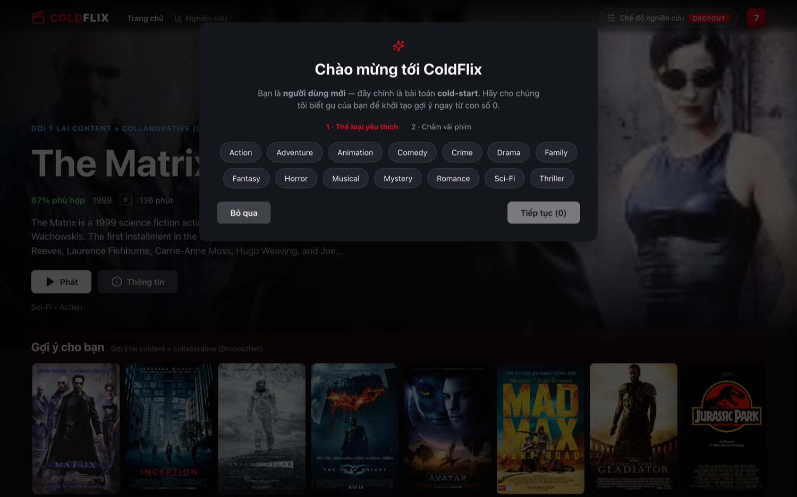
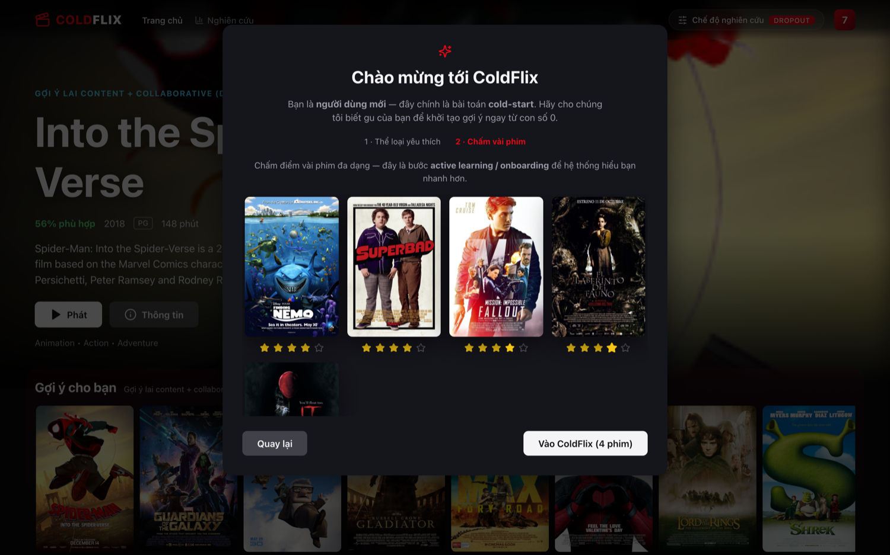
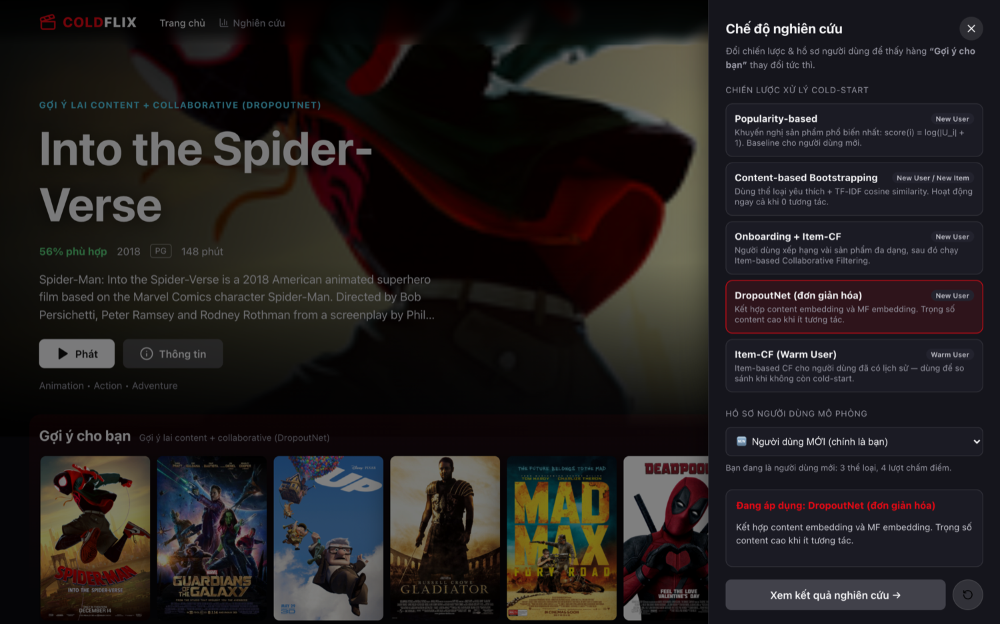
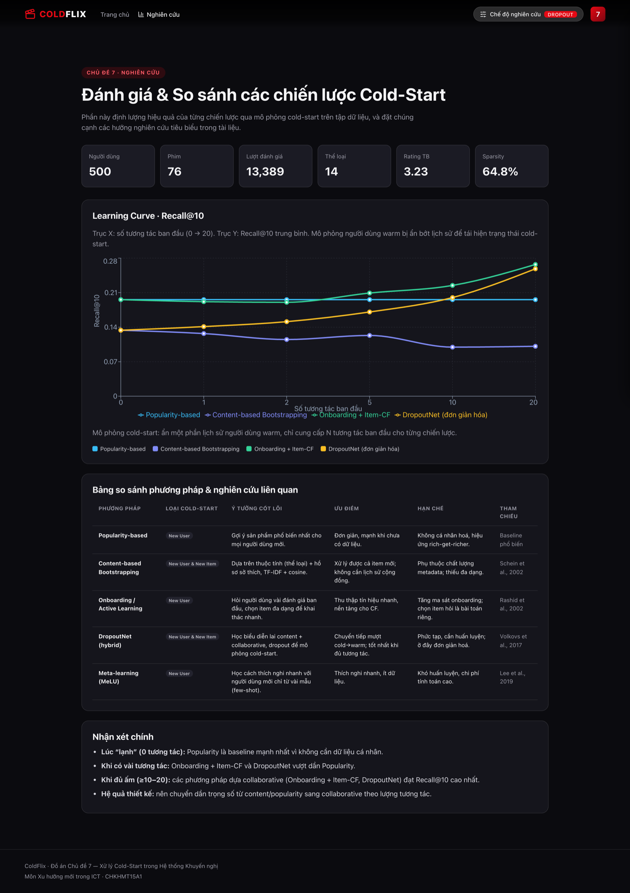

Xu hướng mới trong ICT · CHKHMT15A1 · Chủ đề 7
Xử lý Cold-Start
trong Hệ thống Khuyến nghị
Demo & nghiên cứu qua ứng dụng COLDFLIX — một "Netflix thu nhỏ" so sánh 5 chiến lược.
Full-stack: React + Vite · FastAPI + scikit-learn · Docker
Bài toán
Cold-Start là gì & vì sao khó?
Hệ khuyến nghị dựa vào lịch sử tương tác để cá nhân hoá. Nhưng khi
chưa có lịch sử, mô hình collaborative "đóng băng".
Hệ quả thực tế
- Người dùng mới nhận gợi ý kém → rời bỏ sớm
- Phim/sản phẩm mới không bao giờ được hiển thị
- Vòng lặp "rich-get-richer", thiếu đa dạng
Định nghĩa
Cold-start là tình huống hệ thống thiếu dữ liệu tương tác cho một
thực thể (người dùng hoặc sản phẩm) để đưa ra khuyến nghị đáng tin cậy.
Ma trận tương tác của ta có độ thưa
~65% — minh hoạ rõ thách thức này.
Phân loại
Ba dạng Cold-Start
New User
Người dùng mới, chưa có hành vi. Cần khai thác tín hiệu phụ (nhân khẩu học, onboarding).
New Item
Sản phẩm mới, chưa ai tương tác. Dựa vào thuộc tính nội dung (metadata).
New System
Hệ thống vừa khởi chạy, dữ liệu nghèo nàn toàn cục. Thường khởi đầu bằng popularity.
ColdFlix tập trung New User (onboarding) và xử lý được cả New Item qua content-based.
Hiện trạng & nghiên cứu liên quan
Các hướng giải quyết trên thực tế
| Hướng tiếp cận | Ý tưởng cốt lõi | Ưu / Nhược | Tham chiếu |
|---|
| Popularity | Gợi ý phổ biến nhất | Đơn giản, mạnh lúc lạnh / không cá nhân hoá | Baseline |
| Content-based | Khớp thuộc tính ↔ hồ sơ sở thích | Xử lý item mới / phụ thuộc metadata | Schein 2002 |
| Active learning / Onboarding | Hỏi vài đánh giá khởi đầu | Thu tín hiệu nhanh / tăng ma sát | Rashid 2002 |
| Hybrid sâu (DropoutNet) | Học biểu diễn lai, dropout mô phỏng cold | Chuyển tiếp mượt / phức tạp | Volkovs 2017 |
| Meta-learning (MeLU) | Few-shot thích nghi user mới | Ít dữ liệu / khó huấn luyện | Lee 2019 |
→ Không có "viên đạn bạc": mỗi hướng mạnh ở một giai đoạn khác nhau của vòng đời dữ liệu.
Động lực
Khoảng trống & mục tiêu của ColdFlix
- Các nghiên cứu thường đánh giá rời rạc từng phương pháp trên benchmark khác nhau → khó so sánh trực quan.
- ColdFlix đặt 5 chiến lược trên cùng một dữ liệu & cùng một thước đo (Recall@10), trực quan hoá bằng learning curve theo số tương tác.
- Gắn nghiên cứu vào một sản phẩm thật (giao diện Netflix) để thấy tác động đến trải nghiệm người dùng mới.
Phương pháp
5 chiến lược triển khai
| Chiến lược | Loại cold-start | Kỹ thuật |
|---|
| Popularity-based | New User | Đếm số người dùng, log-scale |
| Content-based Bootstrapping | New User & Item | TF-IDF thể loại + cosine |
| Onboarding + Item-CF | New User | Active learning → Item-based CF |
| DropoutNet (đơn giản hoá) | New User & Item | Content + SVD, trọng số α thích nghi |
| Item-CF (Warm) | Warm User | Đối chứng khi hết cold-start |
Công thức
Bên trong các mô hình
Popularity
score(i) = log(|U_i| + 1)
Content-based (cosine)
sim(p, i) = (p · v_i) / (‖p‖ ‖v_i‖)
Item-based CF
ŝ(u,i) = Σ_j sim(i,j)·r(u,j) / Σ_j |sim(i,j)|
DropoutNet (hybrid)
score = α·content + (1−α)·collaborative
α giảm dần khi số tương tác tăng
Kiến trúc hệ thống
ColdFlix end-to-end
Frontend
React + Vite
Giao diện Netflix
→
REST API
FastAPI
/recommend, /catalog…
→
RecSys core
scikit-learn
TF-IDF · CF · SVD
→
Dữ liệu
76 phim thật · 500 user
13.4K ratings
Đóng gói Docker: nginx (FE, proxy /api) + uvicorn (BE). Một lệnh docker compose up.
Thực nghiệm
Phương pháp đánh giá
Dữ liệu có cấu trúc sở thích
Ratings sinh từ sở thích tiềm ẩn theo thể loại + chất lượng phim → cá nhân hoá thực sự có ý nghĩa (không nhiễu thuần tuý).
Giao thức cold-start
Lấy người dùng warm, ẩn bớt lịch sử, chỉ lộ N tương tác đầu (0→20), dự đoán phần giữ lại (holdout).
Thước đo: Recall@10
Recall@10 = |Top10 ∩ Holdout| / min(10, |Holdout|)
Vẽ learning curve: Recall@10 theo số tương tác ban đầu, trung bình trên nhiều người dùng.
Kết quả
Learning Curve — Recall@10 tại 20 tương tác
Onboarding+Item-CF0.267
DropoutNet0.258
Popularity0.196
Content-based0.101
0.196Popularity — phẳng, không học
+36%Onboarding+Item-CF vượt Popularity khi warm
Thảo luận
Đối chiếu với các nghiên cứu
- Lúc lạnh (0 tương tác): Popularity thắng — khớp kết luận kinh điển rằng baseline phi cá nhân hoá khó bị đánh bại khi chưa có dữ liệu.
- Khi ấm dần: Onboarding + DropoutNet vượt lên — xác nhận giá trị của active learning (Rashid 2002) và hybrid (Volkovs 2017).
- Content-based yếu vì chỉ dùng thể loại thô — đúng với nhận định của Schein 2002 rằng chất lượng metadata quyết định.
- Hàm ý thiết kế: chuyển trọng số
α từ content/popularity → collaborative theo lượng tương tác (đúng cơ chế DropoutNet).
Demo — các bước UI
Trải nghiệm thật trong ColdFlix
Phim thật, poster thật. 5 bước demo trực tiếp trên giao diện:
- 1 Onboarding: chọn thể loại yêu thích
- 2 Chấm điểm vài phim (active learning)
- 3 Trang chủ cá nhân hoá theo chiến lược
- 4 Modal chi tiết + "Phim tương tự" (Item-CF)
- 5 Chế độ nghiên cứu & trang Insights
1·2 Onboarding — chính là tình huống cold-start


Người dùng mới chọn thể loại + chấm vài phim đa dạng → tín hiệu đầu tiên để thoát cold-start.
3 Trang chủ — gợi ý cá nhân hoá (poster phim thật)
Hero + hàng "Gợi ý cho bạn" đổi tức thì theo chiến lược; carousel theo thể loại như Netflix.
4 Modal chi tiết + chấm điểm + Item-CF
Mô tả thật, chấm sao (huấn luyện gợi ý), hàng "Phim tương tự (Item-based CF)".
5 Chế độ nghiên cứu & trang Insights


Đổi chiến lược/người dùng → gợi ý đổi tức thì · trang Nghiên cứu: learning curve + bảng so sánh.
Hạn chế & hướng phát triển
Còn gì phía trước?
Hạn chế
- Dữ liệu synthetic (chưa phải hành vi thật)
- DropoutNet bản đơn giản hoá (chưa huấn luyện neural đầy đủ)
- Content chỉ dùng thể loại
Hướng phát triển
- Dùng MovieLens thật + đặc trưng phong phú (đạo diễn, diễn viên, mô tả)
- Bổ sung meta-learning (MeLU) & đánh giá NDCG, diversity
- A/B test trên người dùng thật
Kết luận
Tổng kết
- Cold-start là thách thức cốt lõi; không một chiến lược nào thắng mọi giai đoạn.
- Giải pháp tốt = lai & thích nghi: popularity/content lúc lạnh → collaborative khi ấm.
- ColdFlix chứng minh điều đó bằng một sản phẩm chạy được + đánh giá định lượng nhất quán.
COLDFLIX · Cảm ơn & Q/A